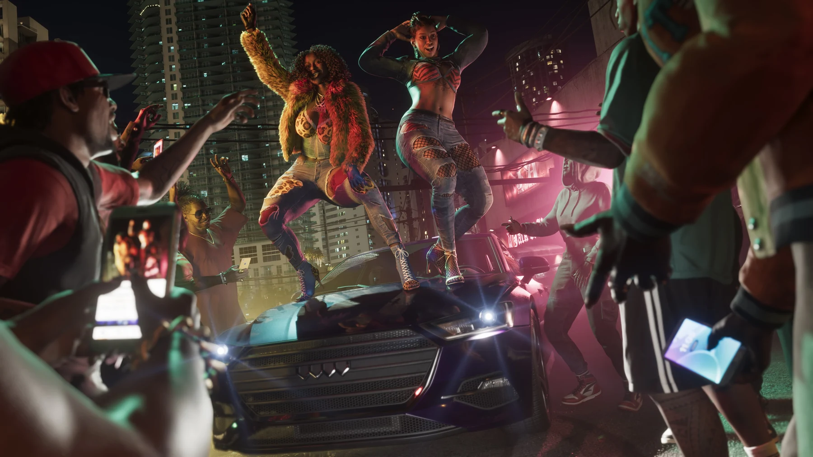

De la amistad a una identidad musical
Rockstar las presenta como amigas y artistas que desarrollaron presencia online. El trabajo en pareja forma parte de su identidad. La web oficial todavía no ofrece una discografía completa ni una bio individual extensa de cada integrante.
El primer éxito y el contrato
La biografía menciona una canción con DWNPLY que les dio proyección local. Después de varios años, el dúo firma con Only Raw Records, asociado a Boobie Ike y Dre'Quan. La ficha no adelanta el resultado de esa apuesta.

Redes como parte de la sátira
Rockstar describe música y viralidad como parte del concepto del dúo. Creative Bloq observa una sátira de redes y fama en el juego, pero eso no confirma cada función de las aplicaciones. Mantén separado el marketing del personaje de los sistemas interactivos.
En resumen
Real Dimez es un dúo de amigas y artistas fichadas por Only Raw; Rockstar las describe mediante música, viralidad e historia compartida.
Preguntas frecuentes
¿Quiénes forman Real Dimez?
Bae-Luxe y Roxy.
¿Con quién colaboraron antes de Only Raw?
La bio menciona un tema junto a DWNPLY.
¿Quién las ficha?
Dre'Quan Priest para Only Raw Records, según Rockstar.
Fuentes y lecturas
Consulta la fuente original cuando exista y su fecha; los anuncios, el catálogo y las guías de terceros pueden cambiar.